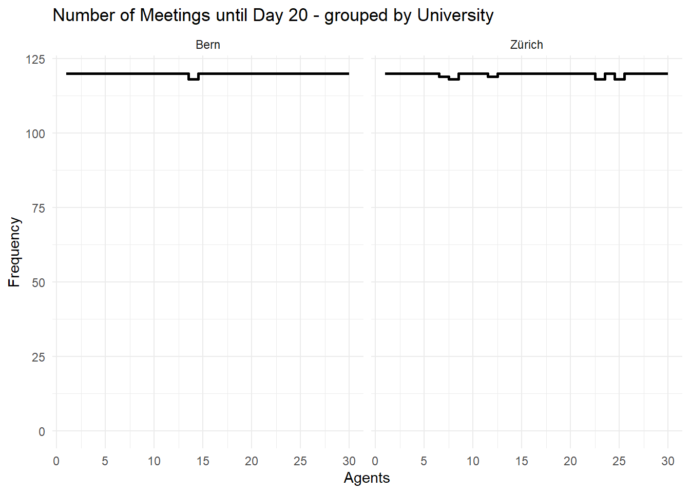
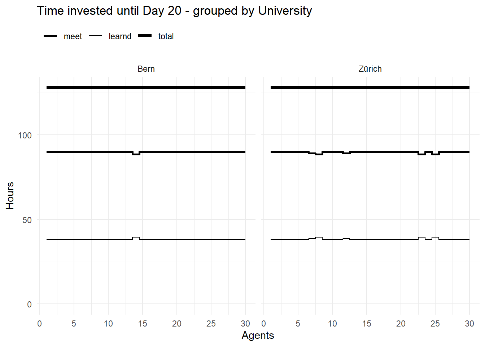
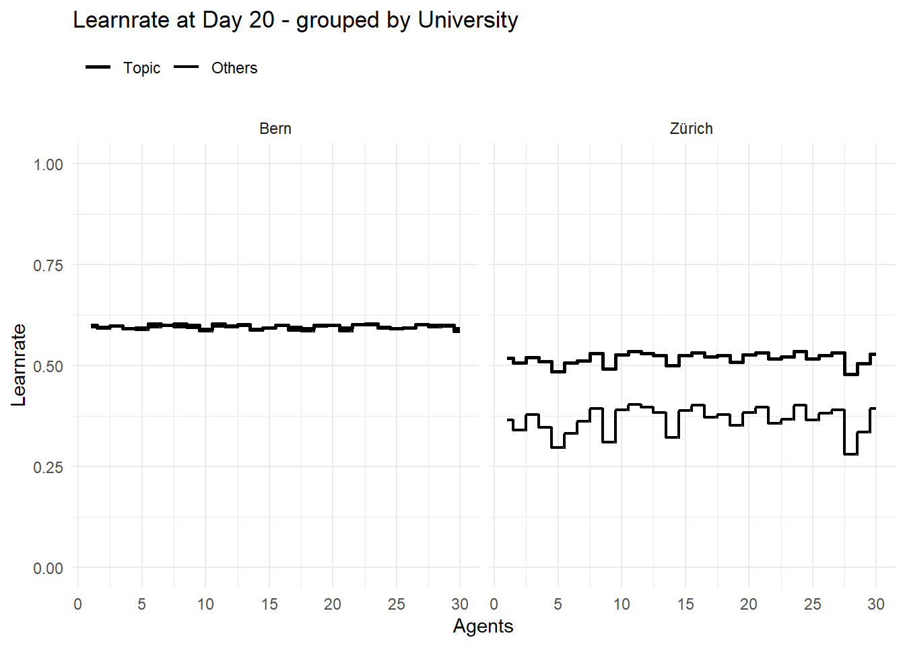
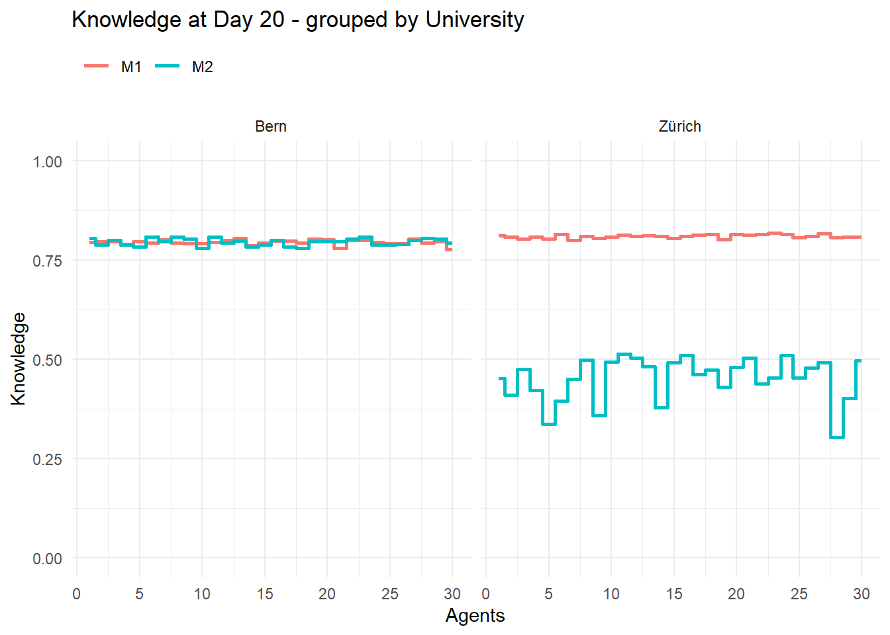

Simulation of selected Meetings (by Knowledge and bounded rationality)
The time has come for the next big step! So far, the encounters have been purely random, but this is about to change. A first assumption is that the agents are pure utility maximisers of their preferred knowledge.
It seems utopian to believe that each agent knows exactly how much knowledge all other agents have, even if they work at different universities. For this reason, an ingroup and an outgroup are defined for the utility calculation, so that outside the university only the average knowledge of the university is known.
Definitions
Loading some Packages for easier Data management and Presentation of Results
sort_Pop<-function(Pop=Pop,sort_Par=TRUE,clean_Par=FALSE,sort_Agents=NA){if(sort_Par==TRUE){Pop<-Pop%>%select(tidyselect::all_of(sort_Colnames(Pop =Pop, name ="ID")),tidyselect::all_of(sort_Colnames(Pop =Pop, name ="Preference")),tidyselect::all_of(sort_Colnames(Pop =Pop, name ="Agents")),tidyselect::all_of(sort_Colnames(Pop =Pop, name ="University")),tidyselect::all_of(sort_Colnames(Pop =Pop, name ="Knowledge")),tidyselect::all_of(sort_Colnames(Pop =Pop, name ="Counter")),tidyselect::all_of(sort_Colnames(Pop =Pop, name ="Resources")),everything())}if(clean_Par==TRUE){Pop<-Pop%>%select(tidyselect::all_of(sort_Colnames(Pop =Pop, name ="ID")),tidyselect::all_of(sort_Colnames(Pop =Pop, name ="Preference")),tidyselect::all_of(sort_Colnames(Pop =Pop, name ="Agents")),tidyselect::all_of(sort_Colnames(Pop =Pop, name ="University")),tidyselect::all_of(sort_Colnames(Pop =Pop, name ="Knowledge")),tidyselect::all_of(sort_Colnames(Pop =Pop, name ="Counter")))}if(!is.na(sort_Agents)){Pop<-Pop%>%arrange(across(all_of(sort_Agents)))}return(Pop)}
update_University_Topic<-function(Pop=Pop,sort_Par=TRUE,clean_Par=FALSE,sort_Agents=NA){Typs<-get_Typ(Pop =Pop, name ="Knowledge")Pop_long<-longer_Pop(Pop =Pop, name ="Knowledge")Pop_long<-Pop_long%>%group_by(Typ, ID_University)%>%mutate(tmp_Knowledge =mean(Knowledge))%>%group_by(ID_University)%>%mutate(tmp_Rank =rank(tmp_Knowledge, ties.method ="random"), tmp_Rank =max(tmp_Rank)-tmp_Rank+1, tmp_Rank =0.5^tmp_Rank, University_Topic =Typ[which.max(tmp_Rank)])%>%ungroup()Pop_long<-del_tmp(Pop =Pop_long)Pop<-wider_Pop(Pop_long =Pop_long, name ="Knowledge")Pop<-sort_Pop(Pop =Pop, sort_Par =sort_Par, clean_Par =clean_Par, sort_Agents =sort_Agents)return(Pop)}
Generate grouped Population
Code
gen_Pop<-function(addToPop=NULL,nA=NumberOfAgents,Preference="Max",ID_University=ID_University,K=Knowledge,Typ=SpezKnowledge,pWD=percentsWorkingaDay,pMD=percentsMeetingsaDay){ID<-seq_len(nA)Pop<-tibble(ID =ID, ID_University =ID_University, Preference =Preference)Pop<-update_Typ(Pop =Pop, name ="Agents", Typ =list("p_WorkDay", "p_MeetDay"), add =list(pWD, pMD), set =TRUE)Pop<-update_Typ(Pop =Pop, name ="Knowledge", Typ =Typ, add =K, set =TRUE)if(!is.null(addToPop)){Pop<-Pop%>%mutate(ID =ID+max(addToPop$ID))Typ_add<-get_Typ(Pop =addToPop, name ="Knowledge")Pop<-update_Typ(Pop =Pop, name ="Knowledge", Typ =Typ_add, add =0)addToPop<-update_Typ(Pop =addToPop, name ="Knowledge", Typ =Typ, add =0)Pop<-bind_rows(addToPop,Pop)}Pop<-update_Agents_Learnrate(Pop =Pop)Pop<-update_Agents_Topic(Pop =Pop)Pop<-update_University_Learnrate(Pop =Pop)Pop<-update_University_Topic(Pop =Pop)Pop<-sort_Pop(Pop =Pop)return(Pop)}
Code
Pop<-gen_Pop( nA =3, Preference ="Max", ID_University ="Zürich", K =list(0.01, 0.2), Typ =list("M1", "M2"), pWD =0.5, pMD =0.8)Pop<-gen_Pop( addToPop =Pop, nA =2, Preference ="All", ID_University ="Bern", K =list(0.01, 0.2), Typ =list("M3", "M2"), pWD =0.2, pMD =0.5)Pop<-gen_Pop( addToPop =Pop, nA =1, Preference ="M3", ID_University ="Bern", K =list(0.8), Typ =list("M3"), pWD =0.2, pMD =0.5)Pop<-gen_Pop( addToPop =Pop, nA =1, Preference ="M1", ID_University ="Bern", K =list(0.3, 0.3, 0.3), Typ =list("M1", "M2", "M3"), pWD =0.2, pMD =0.5)Pop<-gen_Pop( addToPop =Pop, nA =1, ID_University ="Bern", K =list(0.0, 0.0, 0.0), Typ =list("M1", "M2", "M3"), pWD =0.2, pMD =0.5)Pop
# A tibble: 8 × 14
ID ID_University Preference Agents_Learnrate_Others Agents_Learnrate_Topic
<int> <chr> <chr> <dbl> <dbl>
1 1 Zürich Max 0.0176 0.103
2 2 Zürich Max 0.0176 0.103
3 3 Zürich Max 0.0176 0.103
4 4 Bern All 0.0176 0.103
5 5 Bern All 0.0176 0.103
6 6 Bern M3 0.0571 0.4
7 7 Bern M1 0.262 0.262
8 8 Bern Max 0.001 0.001
# ℹ 9 more variables: Agents_p_MeetDay <dbl>, Agents_p_WorkDay <dbl>,
# Agents_Topic <chr>, University_Learnrate_Others <dbl>,
# University_Learnrate_Topic <dbl>, University_Topic <chr>,
# Knowledge_M1 <dbl>, Knowledge_M2 <dbl>, Knowledge_M3 <dbl>
Simulation parameter
reset_Counter
Code
reset_Counter<-function(Pop=Pop){Pop<-update_Typ(Pop =Pop, name ="Counter", Typ =list("Day", "Time_total","Time_meet","Time_learnd","Number_meet"), add =0, set =TRUE)return(Pop)}
update_Resources
Code
update_Resources<-function(Pop=Pop,time_day=hoursDay,set=TRUE){tmp_Time<-time_day*Pop[["Agents_p_WorkDay"]]tmp_p<-Pop[["Agents_p_MeetDay"]]Pop<-update_Typ(Pop =Pop, name ="Resources", Typ =list("Time_total","Time_meet","Time_learnd"), add =list(tmp_Time,tmp_Time*tmp_p,tmp_Time*(1-tmp_p)), set =set)return(Pop)}
sel_Pairs_rnd<-function(Pop=Pop,psize=percentsOfPop){psize<-min(psize, 1)nR<-nrow(Pop)n<-round(nR*psize*0.4999, 0)n<-max(n, 1)SubPop<-sel_SubPop( Pop =Pop, n =n)Slot1<-SubPop$sel%>%mutate(tmp_ID =seq_len(n))if(nrow(SubPop$rest)==n){Slot2<-SubPop$rest}else{SubPop<-sel_SubPop( Pop =SubPop$rest, n =n)Slot2<-SubPop$sel}Slot2<-Slot2%>%mutate(tmp_ID =seq_len(n))Pairs<-bind_rows(Slot1, Slot2)return(Pairs)}
A learning process with updated learn rate by current knowledge when Agents meet selective Agents with higher Knowledge
Code
sim_Days<-function(Pop=Pop,nD=nubmberDay,time_day=8,time_meet=0.75){Pop<-update_Agents_Learnrate(Pop =Pop)Pop<-update_Agents_Topic(Pop =Pop)Pop<-update_University_Learnrate(Pop =Pop)Pop<-update_University_Topic(Pop =Pop)Pop<-reset_Counter( Pop =Pop)Pop<-update_Resources( Pop =Pop, time_day =time_day)TL<-get_Timeline(TL =TL, Pop =Pop)for(iin1:nD){Pop<-learn_Day(Pop =Pop, time_day =time_day, time_meet =time_meet)if(i%%5==0){Pop<-update_University_Learnrate(Pop =Pop)Pop<-update_University_Topic(Pop =Pop)}Pop<-update_Typ(Pop =Pop, name ="Counter", Typ =list("Day"), add =list(i), set =TRUE)TL<-get_Timeline(TL =TL, Pop =Pop)}Output<-list( Pop =Pop, TL =TL)return(Output)}
Definition & Calculation
Code
Pop<-gen_Pop( nA =30, Preference ="M1", ID_University ="Zürich", K =list(0.01), Typ =list("M1"), pWD =0.8, pMD =0.8)Pop<-gen_Pop( addToPop =Pop, nA =30, Preference ="All", ID_University ="Bern", K =list(0.01), Typ =list("M2"), pWD =0.8, pMD =0.8)Pop
plt_Number_meet(TL =res$TL, TP =1, Group ="ID_University")
Code
plt_Number_meet(TL =res$TL, TP =20, Group ="ID_University")

Code
plt_Time_invest(TL =res$TL, TP =20, Group ="ID_University")

Code
plt_Learnrate_Time(TL =res$TL, TP =20, Group ="ID_University")

Code
plt_Knowledge_Time(TL =res$TL, TP =20, Group ="ID_University")

Special Cases
Only one Agent with Knowledge (0.8)
Code
Pop<-gen_Pop( nA =10, Preference ="M1", ID_University ="Zürich", K =list(0.01), Typ =list("M1"), pWD =0.8, pMD =0.8)Pop<-gen_Pop( addToPop =Pop, nA =10, Preference ="All", ID_University ="Zürich", K =list(0.01), Typ =list("M1"), pWD =0.8, pMD =0.8)Pop<-gen_Pop( addToPop =Pop, nA =9, ID_University ="Zürich", K =list(0.01), Typ =list("M1"), pWD =0.8, pMD =0.8)Pop<-gen_Pop( addToPop =Pop, nA =1, ID_University ="Zürich", K =list(0.8), Typ =list("M1"), pWD =0.8, pMD =0.8)Pop<-gen_Pop( addToPop =Pop, nA =10, Preference ="M2", ID_University ="Bern", K =list(0.01), Typ =list("M2"), pWD =0.8, pMD =0.8)Pop<-gen_Pop( addToPop =Pop, nA =10, Preference ="All", ID_University ="Bern", K =list(0.01), Typ =list("M2"), pWD =0.8, pMD =0.8)Pop<-gen_Pop( addToPop =Pop, nA =9, ID_University ="Bern", K =list(0.01), Typ =list("M2"), pWD =0.8, pMD =0.8)Pop<-gen_Pop( addToPop =Pop, nA =1, ID_University ="Bern", K =list(0.4), Typ =list("M2"), pWD =0.8, pMD =0.8)Pop